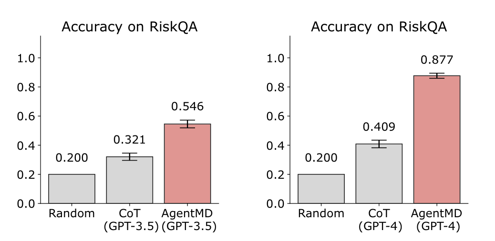

AI for Evidence Utilization · Risk Prediction
AgentMD: Empowering Language Agents for Risk Prediction with Large-Scale Clinical Tool Learning
Qiao Jin, Zhizheng Wang, Yifan Yang, Qingqing Zhu, Donald Wright, Thomas Huang, Nikhil Khandekar, Nicholas Wan, Xuguang Ai, W. John Wilbur, Zhe He, R. Andrew Taylor, Qingyu Chen, Zhiyong Lu
Nature Communications 2025
These slides were generated with the help of AI and may contain errors.
01Motivation
Clinical calculators are trusted — and hard to reach
- Risk scores like CURB-65 turn a patient’s numbers into a decision: admit, discharge, escalate.
- Thousands sit published in the literature, but usability and dissemination keep most of them from the bedside.
- Of a random sample of calculators, 96% had no online implementation at all — the tools exist only as prose in a paper.
02Method
AgentMD both curates clinical calculators and applies them
03Perspective
In today’s terms, RiskCalcs is a skill library
- Written before the vocabulary existed — but the architecture is the one agents now use for skills.
- The pattern generalizes: an agent gets reliable not by knowing more, but by being handed a vetted tool — and a way to find it.
| What each RiskCalcs tool ships with | Its counterpart today |
|---|---|
| Purpose, Computation, Interpretation and Utility — written in plain language | the body of a skill file |
| Eligibility — which patients the calculator applies to | the description that tells an agent when to load it |
| compute_curb65(…) with a typed docstring, plus generated unit tests | the bundled script, and its tests |
| 2,164 tools indexed by MedCPT — only the top candidates ever reach the prompt | skill search, and progressive disclosure |
| the chosen function runs in a Python interpreter, not in the model | sandboxed execution |
04Result
RiskCalcs: 2,164 calculators that actually run
- Over 90% pass rate on automatically generated unit tests, and 84.0% on manually written ones.
- Because most curated calculators have no online version, RiskCalcs supplements — rather than duplicates — existing hubs.
2,164
executable calculators
curated from PubMed
curated from PubMed
87.6%
computing logic
correct
correct
89.0%
result interpretation
correct
correct
91.6%
calculations match
manual computation
manual computation
05Result
AgentMD outperforms chain-of-thought reasoning by executing real calculators
- AgentMD reaches 87.7% on the 350-question RiskQA benchmark, against 40.9% for chain-of-thought GPT-4.
- Even on GPT-3.5, AgentMD (54.6%) beats chain-of-thought on GPT-4 — the tool matters more than the model.
- Picking the right tool is itself learned: 82.3% selection accuracy, against 72.3% for MedCPT dense retrieval alone.

06Result
Clinicians validated AgentMD on 698 emergency department notes
- 698 emergency department provider notes from Yale Medicine, scored by clinicians.
- Sixteen commonly used calculators, judged on patient eligibility, calculation process and usefulness.
80.6%
of patients correctly
judged tool-eligible
judged tool-eligible
80.8%
calculation processes
correct or partly correct
correct or partly correct
97.7%
results rated useful
or partly useful
or partly useful
Accuracy trails the controlled benchmark mainly because real notes carry missing values.
07Result
AgentMD scales from bedside questions to institution-level risk management
- Applied to 9,822 admission notes in MIMIC-III, AgentMD computes risks across the cohort at once.
- Aggregating scores by calculator ranks patients within each tool — surfacing who is most at risk, and for what.
- The same agent that answers a bedside question becomes an instrument for institution-level risk management.
08Summary
AgentMD at a glance
| Background | Clinical risk calculators guide everyday decisions in medicine. |
| Problem | Most stay locked in the literature — hard to find, harder to run. |
| Approach | A language agent that curates 2,164 executable calculators from PubMed, then selects and runs them. |
| Results | 87.7% vs 40.9% for chain-of-thought GPT-4 on RiskQA, validated on 698 real emergency notes. |
| Conclusion | Giving agents real tools beats asking them to reason the arithmetic out. |